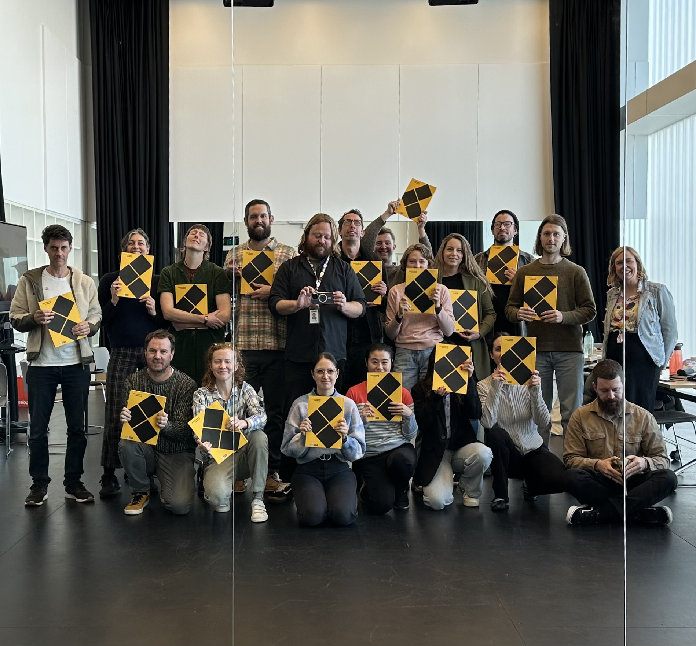
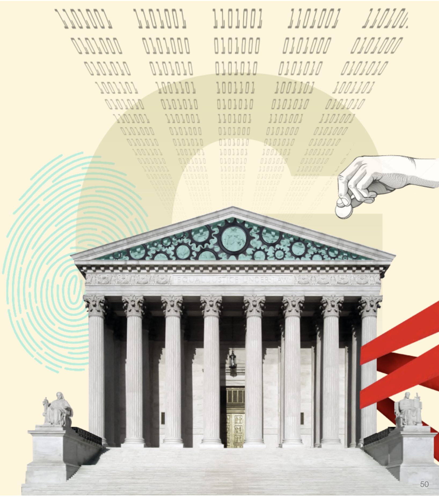
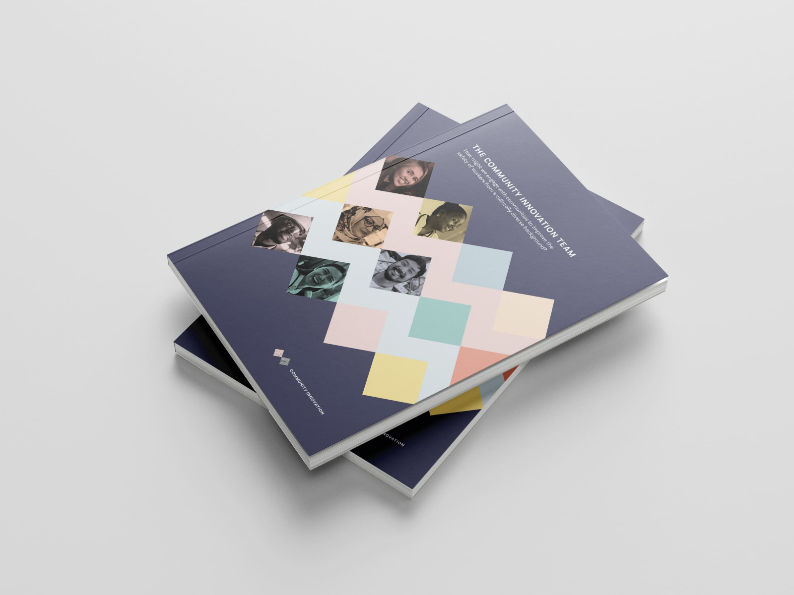

 WorkSafe Victoria — Confidential Enterprise Design Practice — WorkSafe Victoria Challenge: Stand up a centralised design practice within delivery; modernise ways of working. Outcome: $1.8M saving; ~50% fewer program extensions via Dual Track + GELs; 4× productivity uplift; culture to eNPS +41.
 Futures Lab — Confidential Futures Lab — WorkSafe Victoria — Confidential Challenge: Anticipate threats/opportunities and define novel responses. Outcome: Four pilots (20+ users each), one scaled to BAU; shaped the front-end of the 2025 strategy.
 Community Innovation — Link → Community Innovation — WorkSafe Victoria — Link → Outcome: Lived-experience embedded in service delivery; four equitable services; one scaling statewide in 2025.
Craig Walker — Link → AusPost Co-Lab — Craig Walker — Link → Challenge: Bring services to life through collaboration with communities. Outcome: New essential service improving community connection and engagement.